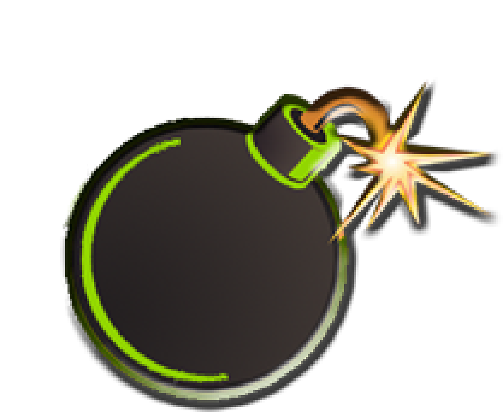

Reference PNGs (gold standard)
REFERENCE

bomb crop logo.png
Best isolated reference. Clean bomb crop from original artwork.
Shows: 3D body gradient, smooth green ring, detailed collar, multi-point spark with glow.
REFERENCE
bomb-only.png

Highest resolution bomb. On black background.
Shows full detail including subtle shadow, glow bloom on spark.
REFERENCE

bomb crop bomb logo2.png
Highest resolution source with teardrop + bomb together.
Best for tracing due to size.